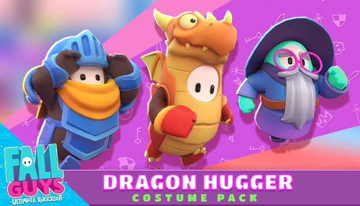

When you are playing Fall guys you can see that every person in the match has customized their character in their prefered way. Wether it would be color, patterns, hats, etc
Just like in other games you can buy certain parts in the game to help you on the game or even a certain limited item that will soon go away. For Fall Guys it will mostly be about costumes to decorate your avatar/charcter.
